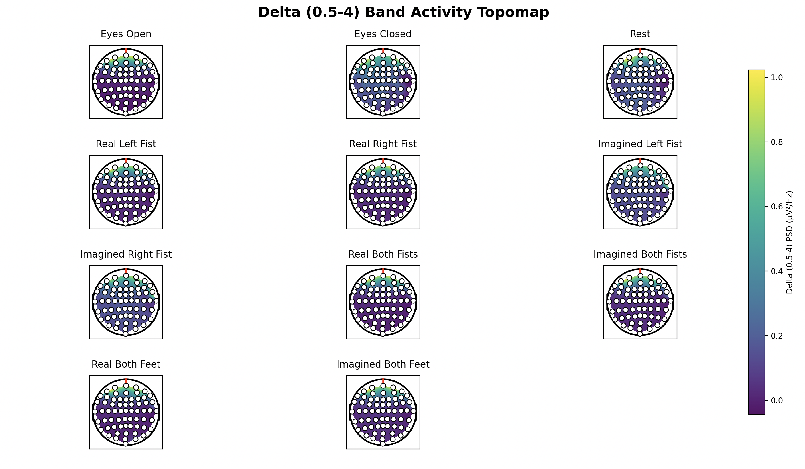
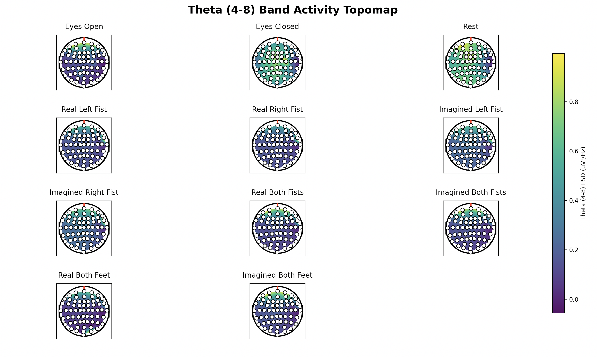
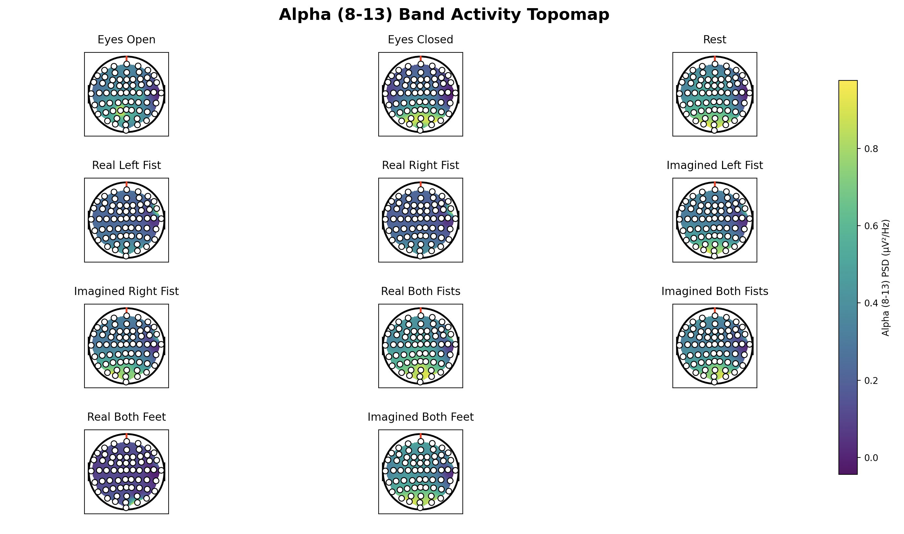
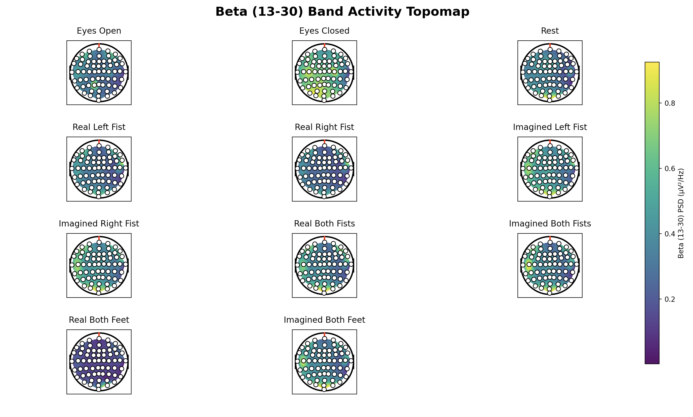
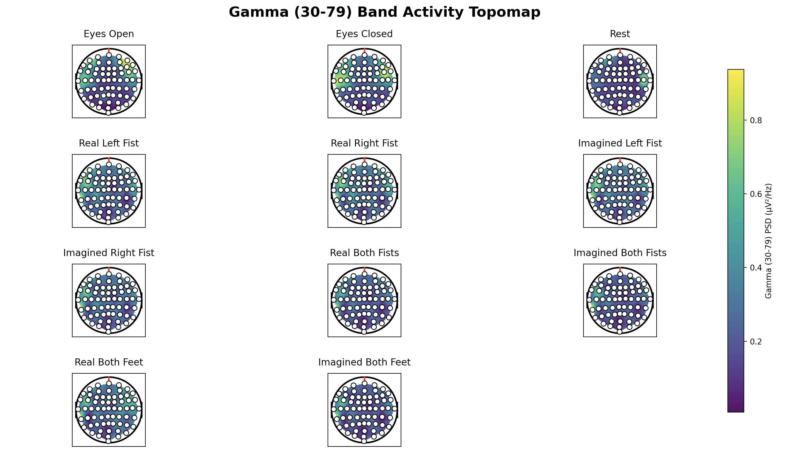

Per channel band power from delta through gamma, interpolated onto head grid for all 11 conditions.
For each of five canonical EEG frequency bands (delta 0.5 to 4 Hz, theta 4 to 8 Hz, alpha 8 to 13 Hz, beta 13 to 30 Hz, gamma 30 to 79 Hz), this script produces one figure showing all 11 movement conditions as topographic brain maps. Each map shows the spatial distribution of power in that band. This is the most spatially informative analysis in the entire pipeline.
No BioSig or MATLAB setup needed — this is pure Python/MNE. This script covers all 11 conditions, including Eyes Open and Eyes Closed baselines,
so it needs .edf files from
EEG CNN Dataset EDF.zip
on Zenodo — the .set format dataset will not work here since it does not include the baselines.
Two things need updating at the top of the script before running: the MOVEMENT_FOLDERS dictionary (11 hardcoded paths, one per class folder)
and pos_file (the channel positions CSV produced by script 11). Update both to match your own setup.
# Step 1: Welch PSD per channel across all files in a folder
FREQ_BANDS = {
"Delta (0.5 to 4)": (0.5, 4),
"Theta (4 to 8)": (4, 8),
"Alpha (8 to 13)": (8, 13),
"Beta (13 to 30)": (13, 30),
"Gamma (30 to 79)": (30, 79),
}
# Step 2: Average band power per channel across all files
band_vals = []
for freqs, psd in psd_list:
mask = (freqs >= band[0]) & (freqs <= band[1])
band_vals.append(np.mean(psd[mask]))
# Step 3: Normalize + interpolate onto head grid + mask
values = normalize(np.array(band_values_per_channel))
grid_z = griddata((x_pos, y_pos), values, (grid_x, grid_y), method='cubic')
grid_z[(grid_x-.5)**2 + (grid_y-.5)**2 > .45**2] = np.nan
Using the Welch method rather than a simple FFT is important for stable PSD estimates. Welch averages multiple overlapping windowed FFTs, significantly reducing variance. With a single FFT the estimate is too noisy for reliable spatial interpolation across only 64 points.
Normalizing per movement per band ensures color scales are consistent within each subplot row. Without normalization, bands with generally higher absolute power (delta) would dominate the colorbar and hide differences between conditions.
The beta band topomaps showed the most interesting patterns: motor task conditions showed asymmetric spatial distributions consistent with contralateral motor cortex involvement, while Rest and baseline conditions showed more symmetric distributions. Seeing this known EEG finding emerge from the pipeline was strong validation.




